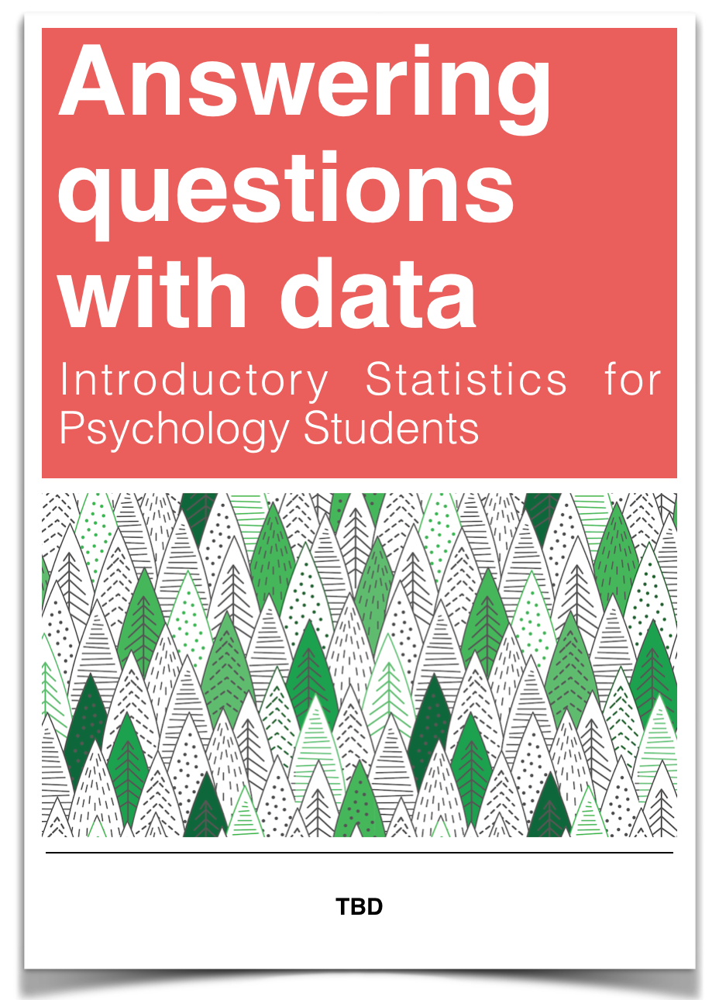

Answering questions with data
Author List, TBD
Current Contributions, Matthew J. C. Crump
Adapted work so far from Navarro, D., Diaz, Barr, & Cetinkaya-Rundel
In Draft subject to change, we will get all attributions and licenses done correctly
2018 Last Compiled 2018-08-03
Preface

Draft in progress
0.1 Important notes
This is a working revision of the OER statistics textbook titled: Introductory Statistics with Randomization and Simulation, by Diaz, Barr, & Cetinkaya-Rundel.
The original source latex files were obtained from : https://www.openintro.org/stat/textbook.php?stat_book=isrs
The original textbook is licensed under a Creative Commons license.
The original latex were converted to Markdown using pandoc. Some minimal typesetting was completed on the first chapter.
The plan is to use this textbook as a starting point for developing another OER textbook for tailored for undergraduate psychology students.
The Github changelog from this point forward reflects all of our changes to the original textbook. The github repository for this project is https://github.com/CrumpLab/statistics
Contributing to the textbook
- Use Hypothes.is, an amazing tool for annotating the web.
Go to Hypothes.is, and “get-started”
Install the the add-on for chrome, or other browser
That’s it, turn on Hypothes.is when you are reading this textbook, and you will see all public annotations made by anyone else.
- The source code for this textbook is available in my github repo statsforpsych
Edit the .Rmd files, and push them back
The edit link in the top bar of the textbook should automatically take you to the source .Rmd file